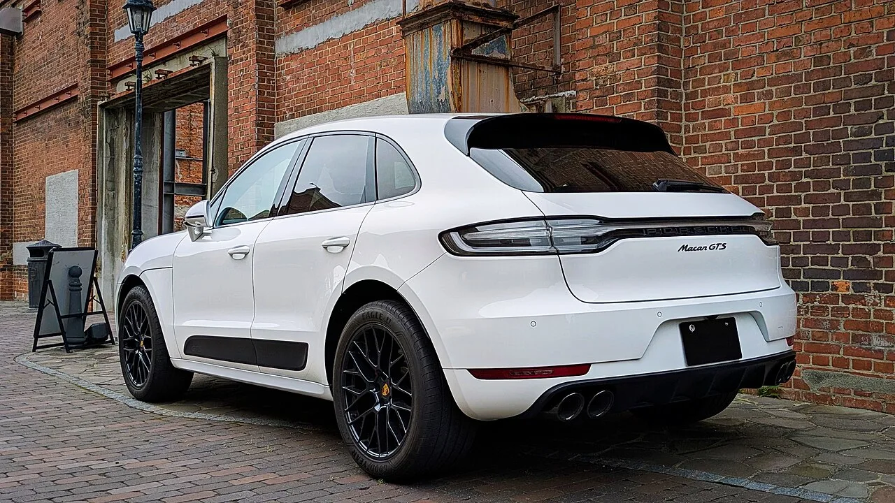

▲ 포르쉐 마칸 GTS. 2027년부터 마칸 라인업이 완전히 전기차로 전환되며 내연기관 버전은 역사 속으로 사라진다 ⓒ Aos.1905, Wikimedia Commons (CC BY-SA 4.0)
미국 자동차 매체 카버즈(CarBuzz)에 따르면 포르쉐 마칸의 마지막 내연기관 세대인 2020~2021년형 중고 평균 가격이 2만 9,444~3만 4,668달러 수준으로, 신형 크로스오버의 평균 가격인 3만 7,000달러보다 오히려 낮게 형성돼 있다. 반면 새로 나온 전기차 버전 마칸은 6만 3,100달러 이상으로 훨씬 비싸다. 프리미엄 브랜드 SUV가 대중 브랜드 신차보다 저렴해지는 역전 현상이 벌어진 셈이다.
1. 왜 이렇게 쌀까 — 전동화 전환이 만든 감가
포르쉐가 2027년부터 마칸 라인업을 전기차로 완전히 전환하기로 하면서, 내연기관 마칸은 사실상 '단종 예정 모델'로 취급받으며 중고 시세가 빠르게 하락했다. 여기에 프리미엄 SUV 특유의 감가상각 속도까지 더해져, 5만~6만 마일 주행한 매물조차 대중 브랜드 신차 수준의 가격에 거래되는 상황이 만들어졌다. 프리미엄 기능과 뛰어난 주행 성능을 이 가격에 누릴 수 있다는 점이 최근 중고차 시장에서 화제가 되고 있는 이유다.
2. 함정은 유지비 — RAV4의 3배

▲ 마칸 GTS 후면. 프리미엄 SUV 특유의 부품·정비 비용이 대중 브랜드 대비 유지비를 크게 끌어올린다 ⓒ Aos.1905, Wikimedia Commons (CC BY-SA 4.0)
다만 초기 구매가만 보고 결정하면 곤란하다. 마칸의 유지비는 RAV4 대비 3배 이상 높은 것으로 나타났다. 부품 교체 비용과 정기 점검 비용이 대중 브랜드보다 훨씬 비싸기 때문이다. 매체는 2027년부터 마칸이 완전히 전기차로 전환되는 만큼, 내연기관 마칸을 원한다면 지금이 사실상 마지막 구매 기회라고 짚었다. 다만 프리미엄 SUV의 유지비 구조를 감당할 수 있는지부터 냉정하게 따져봐야 한다는 조언도 함께 나온다.
특히 중고차 구매 시에는 보증 기간 종료 여부를 반드시 확인해야 한다. 포르쉐 공식 보증이 끝난 매물은 에어서스펜션이나 전자장비 고장 시 수리비가 예상보다 훨씬 커질 수 있다. 가능하다면 포르쉐 인증중고차(Approved) 프로그램이 적용된 매물을 우선 고려하는 것이 초기 구매가 이점을 유지비 리스크로 상쇄당하지 않는 방법이다.